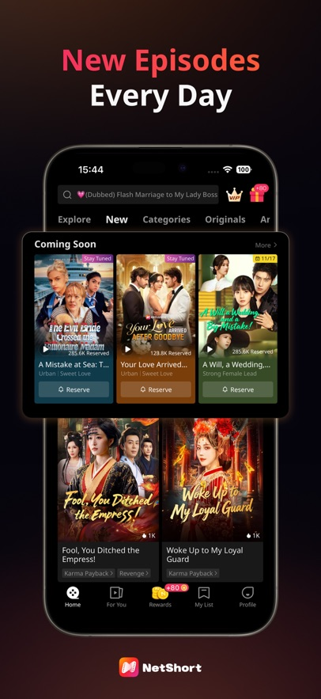

NetShort 的付费墙为什么是双轨制——拆解短剧 App 的商业底层逻辑
为什么 NetShort 同时做 VIP 订阅和币制解锁？免费集数为什么是 N 集而不是整季？从产品设计和用户心理两层解析这套商业模型的取舍与代价。
我第一次打开netshort官网时，最让我困惑的不是它那琳琅满目的短剧题材——霸总、复仇、狼人、黑帮，几乎把短视频平台上所有流量密码都搬了过来——而是它的付费设计：同一个 App，居然同时跑着两套完全独立的付费体系。
VIP 订阅按月收钱，会员期内看遍会员区所有内容；币制解锁则是按需充值，单集 10 到 15 枚币，用多少扣多少——从下载装好 App 之后看到的就是这两套并行的体系。这两套东西之间没有任何打通——VIP 不送币，币也不能抵 VIP 费用。作为一个产品经理出身的观察者，我的第一反应是：这不是自找麻烦吗？为什么不选一个简单的模型？
问题：短剧的"快消费"本质逼出了双轨制
要理解这个设计，得先搞清楚短剧和长视频的根本区别。
长视频平台（Netflix、爱奇艺）的用户行为模式是"包月看剧"——你充一个月会员，预期是这个月里有持续可消费的内容。但短剧不一样。一部短剧通常 50 到 100 集，每集 1 到 2 分钟。一个用户可能三天追完一部剧就走了，然后半个月不上来。你让他花二十多美元充一个月会员？他大概率转身就走。
但完全免费也不行。短剧的制作成本虽然比长剧低，但每集都是真金白银拍出来的。而且短剧用户的注意力极其分散——App 装了可能删，删了可能再装，留存曲线掉得比任何品类都快。
所以 NetShort 遇到的问题是：怎么从一个"三天热度"的用户身上赚到钱，同时不把他吓跑？
答案就是这套看似冗余的双轨制。它不是拍脑袋的设计，而是对短剧消费心理的精准拆解。
拆解：三套漏斗层层筛选付费意愿
我把 NetShort 的商业化漏斗拆成了三层，每一层都在做同一件事——用最低的门槛把用户往里拉，在最恰当的时机逼他做出付费决策。
第一层：免费集数 + 奖励广告的"温水煮青蛙"
每部剧的前几集免费开放，这是漏斗的最宽口径。具体免费几集并不固定，有的可能放到第 5 集，有的只给 1 集就砌付费墙——这个弹性本身就是设计的一部分：热度越高的剧，免费集数越少，因为它不怕把人挡在外面；新剧或冷门剧则多给几集，用更长的钩子把用户勾住。
免费集用完之后，弹出的不是"请充值"，而是一个选项：充值解锁，或者看一个 15 到 30 秒的广告继续。这个设计太妙了——它把"付费"这个二元选择变成了"花钱省时间"vs"花时间省钱"的灰色地带。对很多用户来说，看个广告比掏钱的心理阻力小得多，但广告本身已经在帮 NetShort 变现（广告主付了钱），同时把用户的观看行为再往后推了几集。
推到什么时候才开始逼单？通常是 20 到 40 集之后。到这个阶段，用户已经投入了大量沉没成本——他花了二十多分钟甚至半小时追这部剧，知道了主角是谁、反派是谁，这时候让他半途而废，心理门槛反而比掏钱更高。

第二层：币制解锁的"小额高频"收割
币制是整个模型里最精巧的部分。单集 10 到 15 枚币，一部 80 集的剧如果后半段全付费，大概需要 600 到 900 枚币。这个数字设计得很有意思——它比单充一部剧的成本低，但也没低到让你觉得"那就充吧"。
为什么用"币"而不是直接用美元或人民币？这是经典的支付隔离技巧。心理学研究表明，当你用虚拟货币消费时，对价格的敏感度会下降。你不会去算"这 100 枚币到底值多少钱"，而是会想"100 枚币可以看 7 集，挺划算"。加上每日签到送币、活动送币、看广告也送币——这些零成本的"零钱"会让用户产生"我已经攒了这么多币，不如再充一点凑够解锁一部剧"的心态。
而且币制天然适合短剧的"快消费"场景。一个用户可能只追一部剧，用币解锁完就删 App——他根本不需要一个月的 VIP。币制让 NetShort 能从这类"一次性用户"身上照样赚到钱，而且成本几乎为零（不需要维护订阅关系、不需要发推送、不需要做会员服务）。
第三层：VIP 订阅的"重度用户"锁定
那 VIP 存在的意义是什么？它瞄准的是另一群人——高频追剧用户。这些人每天都刷，一个月可能追四五部剧，币制对他们来说反而不划算。VIP 订阅给了他们一个"买断式"的选项：花一笔钱，这个月随便看，还送去广告、高清画质、离线下载这些附加价值。
有意思的是，VIP 和币制之间刻意不打通。VIP 不送币，币不能抵 VIP。我特意去netshort文档翻了付费体系的说明，确认两套确实完全独立——这不是技术疏漏，而是商业选择——一旦打通，币制的"小额高频"收入就会被 VIP 的包月覆盖掉，NetShort 的总收入反而会下降。两套体系服务两类用户，互不抢生意，各自赚各自的钱。
取舍：这套设计的代价是什么
没有完美的商业模式，这套双轨制也有它的代价。
第一个代价是认知负担。新用户打开 App，看到 VIP 和币两套东西，大概率会困惑：我该充哪个？充了 VIP 还要不要币？虽然产品层面做了引导，但两套体系本身的复杂度就是一道门槛。我见过不少用户因为搞不清楚区别而直接卸载——对短剧这种"低决策成本"的品类来说，这个流失率不低。
第二个代价是广告解锁的体验伤害。看广告解锁的设计虽然巧妙，但每日次数是有限制的。当你追到第 35 集，广告次数用完了，要么掏钱要么等明天——这个断点可能直接把一个本来会付费的用户给气走。而且广告本身的质量参差不齐，有的甚至会引导你去下另一个短剧 App，等于自己给自己导流竞争对手。
第三个代价是题材分层的副作用。NetShort 把短剧按题材分成了黑帮、霸总、复仇、狼人等专区，这本身是好事——用户能快速找到自己喜欢的类型。但题材越垂直，用户的"单剧消费"倾向就越强。一个只看黑帮剧的用户，追完一部可能就没东西可看了（黑帮剧的产量远不如霸总和复仇），他连下一部都找不到，更别说续充 VIP 了。

判断：这套原理意味着什么
拆解完整个模型，我的判断是：NetShort 的双轨制是当前短剧品类下的最优解，但它的天花板也清晰可见。
说它是最优解，是因为它精准命中了短剧用户的行为特征——低留存、快消费、价格敏感。币制抓住了"一次性用户"的最后一个铜板，VIP 锁定了少数愿意长期留下来的高价值用户，免费集数和广告解锁则把流量漏斗的口子开到最大。这套组合拳打下来，在同等流量下的变现效率比单一付费模型高出不少。
但天花板也很明显。首先，短剧品类本身的天花板就低——用户追完几部就腻了，很难建立长视频那种"品牌忠诚度"。其次，双轨制的认知负担随着用户基数增大会越来越重，总有一天会让新用户的转化率触底。最后，题材的垂直化虽然短期内提高了点击率，但长期来看会把用户越分越细，每个细分池的付费意愿都会稀释。
所以我的结论是：如果你是一个只打算追一两部剧的"一次性用户"，币制是更划算的选择——花个几美元就能看完，用完即走没有心理负担。如果你发现自己每天都想刷新剧，那直接上 VIP 更省心，而且还能享受无广告和高清这些附加价值。但如果你想找的是一部能陪伴你半年的"经典好剧"——那 NetShort 可能从一开始就不是为你设计的。
它的整个商业模型，从免费集数到币制设计到题材分区，都是围绕"让你在最短的时间内做出付费决策，然后在下一部剧到来之前把你的钱赚到"这个核心目标构建的。理解了这一点，再看它那些看似复杂的付费选项，每一条就都说得通了。顺便说一句，这套分析用到的资料在GitHub、Gitee和GitCode都有备份，国内访问选 Gitee 最顺。